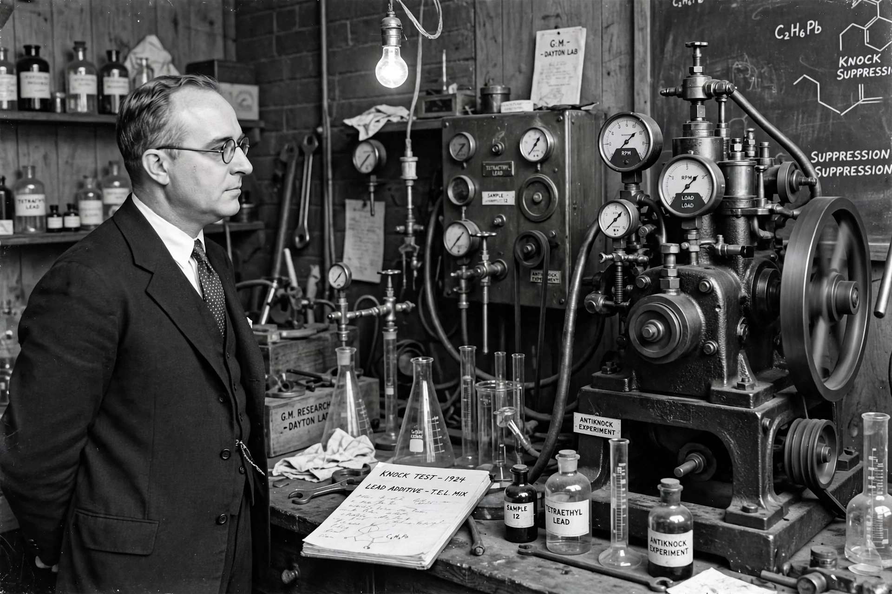

| Thomas Midgley Jr. | |
|---|---|
| Born | May 18, 1889, Beaver Falls, Pennsylvania, U.S. |
| Died | November 2, 1944 (aged 55), Worthington, Ohio, U.S. |
| Nationality | American |
| Known for | Leaded petrol (tetraethyllead); Freon (CFC refrigerants) |
| Fields | Chemical engineering, mechanical engineering |
| Institutions | General Motors |

Thomas Midgley Jr. (May 18, 1889 – November 2, 1944) was an American mechanical and chemical engineer. Working for General Motors, he developed both tetraethyllead (TEL) as an anti-knock additive for petrol and the first chlorofluorocarbons (CFCs), marketed as Freon. Environmental historian J. R. McNeill has remarked that Midgley "had more adverse impact on the atmosphere than any other single organism in Earth's history".
Under Charles Kettering at Dayton Research Laboratories, Midgley's team searched for an additive to stop engine "knocking". In December 1921 they found tetraethyllead highly effective. Marketed from 1923 as "Ethyl" petrol, it was sold despite lead's known toxicity: Midgley himself suffered lead poisoning in 1923, and several workers at production plants died in 1924. At a 1924 press conference Midgley famously washed his hands in TEL and inhaled its vapour to demonstrate its supposed safety. Leaded petrol was eventually phased out worldwide, completed globally in 2021, after evidence of mass lead exposure, especially in children.
In 1928 Midgley was asked to find a safe, non-flammable refrigerant. With Albert Henne and Robert McNary he identified dichlorodifluoromethane — Freon-12 — in days, demonstrating its safety in 1930 by inhaling it and blowing out a candle. CFCs became universal in refrigeration and aerosols until the 1970s–80s, when they were shown to be destroying stratospheric ozone (see ozone hole), leading to their phase-out under the Montreal Protocol of 1987.
Stricken by polio in 1940, Midgley devised a harness of ropes and pulleys to lift himself from bed. On November 2, 1944, he was found strangled in the device — his death ruled accidental. He held over 170 patents and received the Priestley Medal and other honours during his lifetime.
This article was recreated from memory as part of a web-reconstruction exercise.